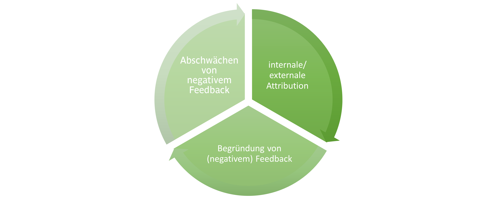

Die Lernamigos &
Feedbackkompetenz
Modul 4: Schwieriges Feedback
Schwieriges Feedback
Bisher hast Du das doch richtig souverän gemeistert, oder?Nicht, dass Wir Dir Angst machen möchten… Jedoch folgen nun noch ein paar Tipps und Tricks für inhaltlich schwieriges Feedback bzw. Feedback an „unentspannte“ Feedbacknehmende. Denn vor allem bei schwierigem Feedback kommt es vermehrt zu Problemen beim Sendenden und/ oder bei dem/ der Empfangenden. Diese können jedoch vermieden werden.
Neugierig geworden? Na dann: Fleißig weiter!
Die Ausführungen dieses Moduls werden zur besseren Verständlichkeit mit Beispielen untermauert. Die dahinterliegenden Beispielsituationen findest Du, wenn Du auf den Pfeil nach unten ⇓ klickst. Mach Dir am besten einen Screenshot, damit Du Dir die Situationen noch einmal ansehen kannst, während Du die Beispiele nachvollziehst.
Situation 1
Frau Müller ist eine langjährige Mitarbeiterin, die für ihre hervorragende Arbeit bekannt ist. Die Digitalisierung macht aber auch vor Frau Müller nicht halt. Zur Präsentation interner und externer Produkte ist es schlichtweg erforderlich, Microsoft PowerPoint aus dem Effeff zu beherrschen. Als Lernamigo begleitest Du Frau Müller bei der Einarbeitung in PowerPoint. Grundsätzlich lernt Frau Müller mit einem ihr zu diesem Thema zur Verfügung gestellten Selbstlernmedium. Bei speziellen Fragen kann sie sich aber jederzeit an Dich als ihren Lernamigo wenden. Auch Feedback-Gespräche zu ihrer Entwicklung in diesem Bereich sind ein regelmäßiger Bestandteil im Lernamigo-Konzept. Manche Dinge funktionieren bereits hervorragend, andere wiederum nicht so gut. Darüber möchtest Du mit Frau Müller gerne sprechen.
Situation 2
Für Dich als Lernamigo sollte es selbstverständlich sein, Harald und Mira im Rahmen Deiner Lernamigo-Ausbildung Feedback zu ihrer Arbeit zu geben. Letztlich soll das Lernamigo-Konzept stetig weiterentwickelt und an manchen Stellen gegebenenfalls verbessert werden...
Und wer könnte dies besser beurteilen als Du?!
Situationen, die wohl jeder irgendwie nachfühlen kann:
Wie sage ich als Lernamigo Frau Müller aus unserem Beispiel, dass sie im Bereich Formatierung bei der Präsentationserstellung wenige Fortschritte macht und die Qualität ihrer Ergebnisse zu wünschen übrig lässt?
Wie sage ich einer Person aus der Personalentwicklung, dass mich etwas an ihrem Lernamigo-Ausbildungs-Konzept stört?
Wie gebe ich Frau Müller negatives Feedback, von der ich weiß, dass sie bei Kritik immer regelrecht ausrastet?
Zu Deiner Beruhigung: Hierfür gibt es wertvolle Lösungsansätze.
Beginnen wir einfach mal...
Grundsätzlich gilt, dass Feedback schnell am Ego des Feedbacknehmenden kratzen kann, weil es oft personalisiert, sprich auf die eigene Person bezogen wird. Dies ist vor allem bei negativem Feedback der Fall. Negatives Feedback gehört somit zu den schwierigsten und oft folgenreichsten Aspekten betrieblicher Kommunikation! Es stellt sich also die Frage: Wie gibt man gutes negatives Feedback?Drei Grundregeln, die es zu beachten gilt:
Was bedeuten die drei Grundregeln nun aber explizit?
Internale und externale Attribution:
Feedback ist problematisch, wenn die Ursachen für den Misserfolg in der Person selbst liegen, z. B. in mangelnder Anstrengung (internale Attribution). Durch die dadurch entstehende Ich-Bedrohung wird eine defensive, demotivierende Reaktion beim Feedbacknehmenden ausgelöst.Allerdings ist es auch schwierig, den Feedbacknehmenden zu Veränderungen zu motivieren, wenn die Gründe nicht in seiner Person liegen (externale Attribution).
Dilemma:
Lösung:
Schwäche die internale Attribution durch externe Gründe ab!
Internale und externale Attribution:
Weg: Dies erreichst Du, indem Du das problematische Verhalten zwar der Person selbst zuordnest, es jedoch nicht verurteilst, sondern als verständlich und nachvollziehbar deklarierst.Beispiele: Schwierigkeit der Aufgabe: „Bei solch komplexen Präsentationen können schon einmal Formatierungs- und Tippfehler vorkommen. Das geht anderen Menschen auch so.”
oder
Erfahrung: „Am Anfang passiert so etwas oft.“
Du siehst, dass potentiell vorwurfsvolle Elemente hier abgeschwächt werden. Gleichzeitig wird jedoch zum Ausdruck gebracht, dass solch entlastende Momente nicht unbegrenzt gelten (Nach dem Motto: „Fehler machen ist anfangs normal, man sollte sie jedoch nicht öfter machen.”).
Begründung von Feedback
Negatives Feedback ohne Begründung impliziert oft schnell Antipathie. Hingegen macht negatives Feedback mit Begründung Veränderungsprozesse einfacher. Allerdings gilt es zu beachten, dass eine zu hohe Zahl an Begründungen oder das Ausmalen potentieller Folgen genauso nach hinten losgehen kann, wie gar keine Begründung (=„Overkill”). Zu viele Begründungen entwerten dann die entlastenden Momente wieder und führen dazu, dass die Nachvollziehbarkeit des Feedbacks zunehmend schwindet. Deshalb gilt: Tritt nicht nach, sondern führe wenige, treffende Begründungen an.Beispiele ⇓
Abschwächen von negativem Feedback
Bei negativem Feedback ist es immer wichtig, positive Aspekte nicht aus dem Auge zu verlieren. Dabei ist es wichtig, die positiven Seiten mehrmals hervorzuheben. Dies gilt insbesondere, da das Negative meist ohnehin genug Aufmerksamkeit bekommt, da es hier vermehrt zu Rechtfertigungsversuchen, Begründungen, etc. kommt. Dadurch besteht die Gefahr, dass ein insgesamt negativer Gesamteindruck entsteht.Dass der Feedbacknehmende negatives Feedback als Angriff gegen seine Person selbst sieht, kann jedoch verhindert werden, indem sich die/der Feedbackgebende auch auf die Stärken seines Gegenübers konzentriert. Hierbei müssen die positiven Aspekte nicht einmal in einem inhaltlichen Zusammenhang mit dem Negativen stehen. (Beispiel: „Ich höre nur Gutes über Deinen Umgang mit Unseren Kund*innen. Im Bereich der Kundenpräsentationserstellung tauchen jedoch leider vermehrt Formatierungs- und Tippfehler auf.“) Löse dieses Dilemma am besten über das „Sandwich-Feedback”, indem Du Positives erwähnst, dann Negatives diskutierst und zwischendurch (wenn der Fokus des Gespräches zu sehr auf das Negative driftet) sowie am Ende erneut etwas Positives anfügst.
Wie strukturiert man ein solches Gespräch?
Und welche Gesprächstechniken können angewandt werden?
Vorbereitung auf ein schwieriges Feedbackgespräch
Stell Dir vorab ein paar wichtige Fragen und beantworte sie gedanklich oder schriftlich. Wenn Du Dich damit sicherer fühlst, kannst Du Dir für das Gespräch auch einen sogenannten „Sprachzettel“ anfertigen, den Du zum Gespräch dann für Dich als Orientierung mitbringst. Dadurch verlierst Du nicht den Faden und kannst Fehler vermeiden. Beispielfragen zur Anfertigung des Sprachzettels:Welches Ziel verfolge ich mit dem Gespräch?
Welches konkrete Verhalten möchte ich kritisieren? Welche konkrete Leistung empfinde ich als nicht ausreichend? An welchem Beispiel kann ich das festmachen?
Welche Lösungswege bzw. zukünftigen Maßnahmen möchte ich vorschlagen?
Weitere Beispielfragen zur gedanklichen Vorbereitung auf ein schwieriges Feedbackgespräch:
Welche Reaktionen meines Gegenübers sind zu erwarten? Wie gehe ich mit diesen um?
Welche Verhaltensmuster zeige ich üblicherweise in solchen Gesprächen?
Welche meiner Stärken unterstützen mich im Gespräch? (z.B. Empathie)
Was könnte mich schwächen? (z.B. Harmoniebedürfnis) Wenn Du Dich mit diesen Fragen vorab auseinandergesetzt hast, bist Du schon ein ganzes Stück vorangekommen!
Struktur des Feedback-Gespräches:

Struktur des Feedback-Gespräches:
 Detailierte Erklärung ⇓
Detailierte Erklärung ⇓
Das Werte- und Entwicklungsquadrat nach Helwig/ Schulz von Thun
Bei dem Werte- und Entwicklungsquadrat handelt es sich um eine Methodik, um in schwierigen Mitarbeitendengesprächen konstruktiv über problematische Verhaltensweisen sprechen und gleichzeitig neue Entwicklungsrichtungen aufzeigen zu können. Das Modell kann in schwierigem Feedback perfekt angewandt werden. Es beruht auf der Vorstellung, dass es keine unveränderbaren schlechten bzw. bösen Eigenschaften gibt. Sie sind lediglich Übertreibungen positiver Eigenschaften. Diese negative Übertreibung ist die Ausgangsbasis für eine positive Entwicklung! Man könnte also sagen: In jeder negativen Eigenschaft findet sich auch etwas Erhaltenswertes! Dadurch fällt es dem Mitarbeitenden leichter, sich auf Veränderungen einzulassen. Außerdem nimmt der Mitarbeitende in diesem Fall nicht so leicht eine Verteidigungsposition ein, da auf negativen Eigenschaften nicht herumgeritten wird, sondern der Fokus vielmehr auf den sich daraus ergebenden Entwicklungsrichtungen liegt. Klingt kompliziert? Ist es aber nicht! Im Folgenden findest Du eine genau Erklärung zur Funktionsweise der Methodik.🙂Hier siehst Du das Grundschema, welches Du für jede Anwendung benutzen kannst! Speichere es Dir am besten ab!


Hier siehst Du das Grundschema, welches Du für jede Anwendung benutzen kannst! Speichere es Dir am besten ab!

Geschafft
Jetzt hast Du einen hoffentlich praktikablen Einblick in das Werte- und Vermittlungsmodell zur Führung schwieriger Feedbackgespräche erhalten.Abschließend folgen nun noch ein paar Tipps zu Gesprächstechniken und dann war's das auch schon mit den Input zum „schwierigen Feedback“! 🙂
Sie unterstützen einen erfolgreichen Gesprächsverlauf, der vor allem bei schwierigen Themen essentiell ist.

Du kannst wirklich stolz auf Dich sein!
Hier findest Du die summary als PDF.